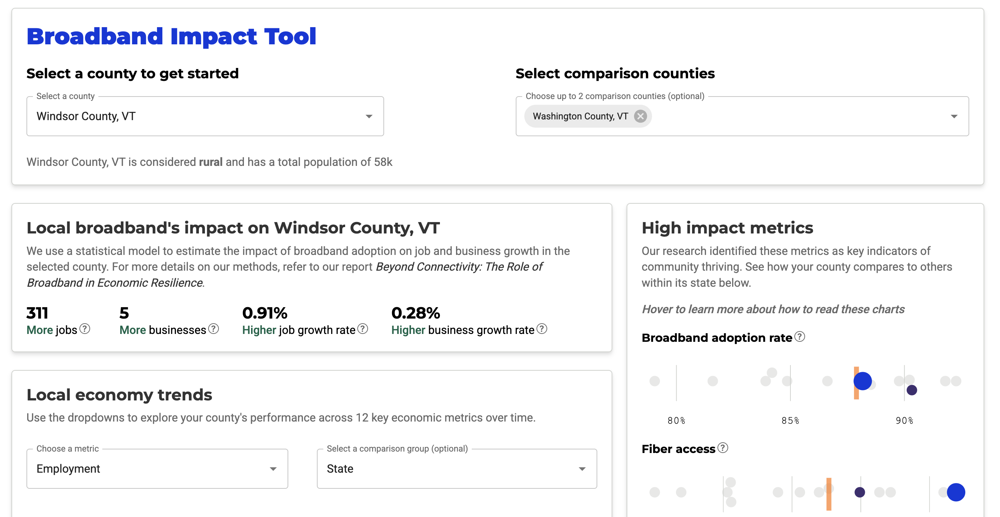
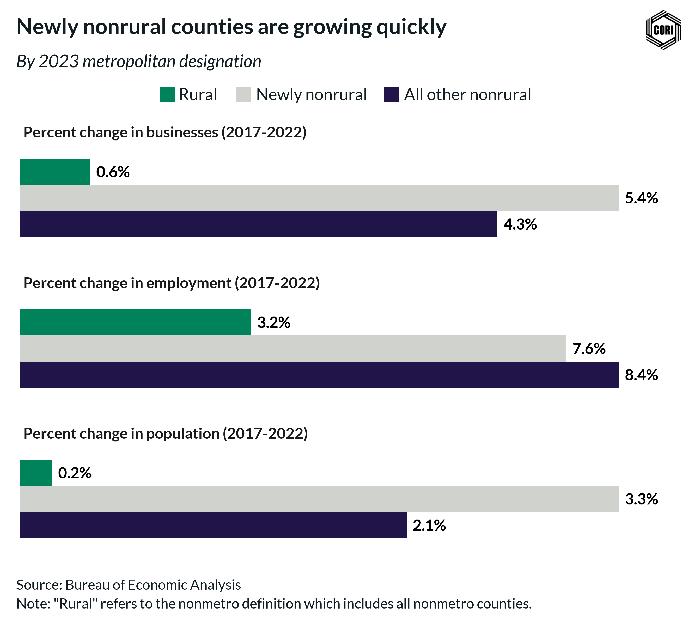
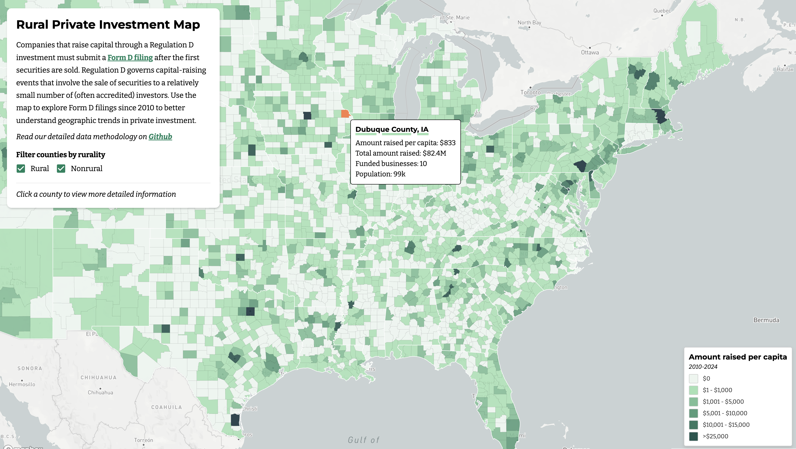
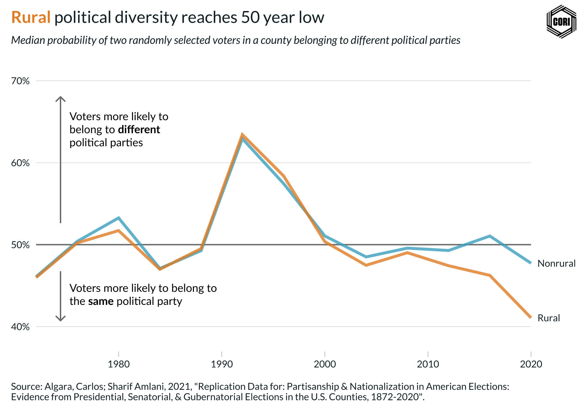
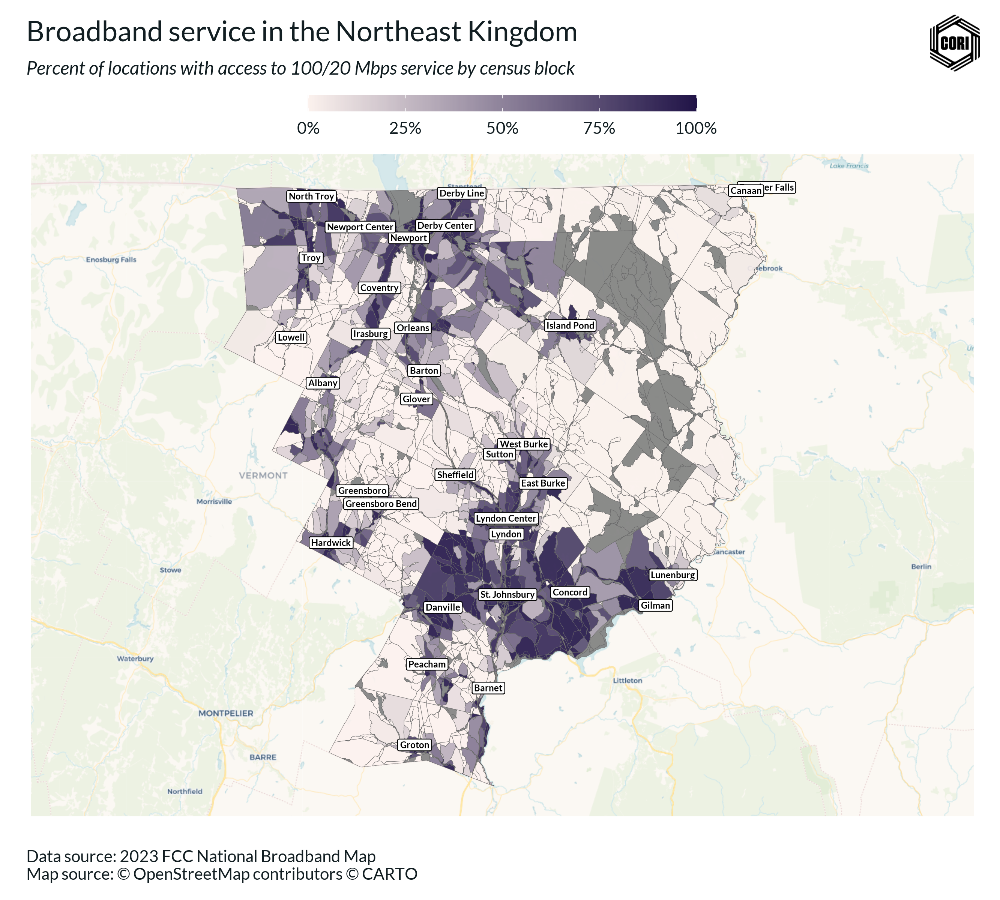
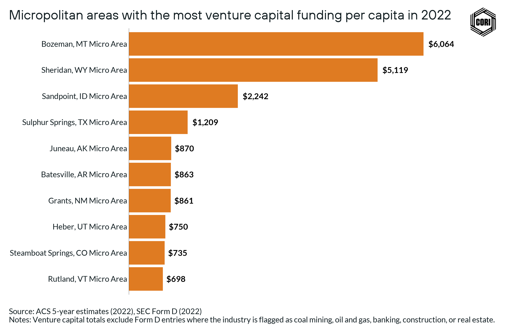
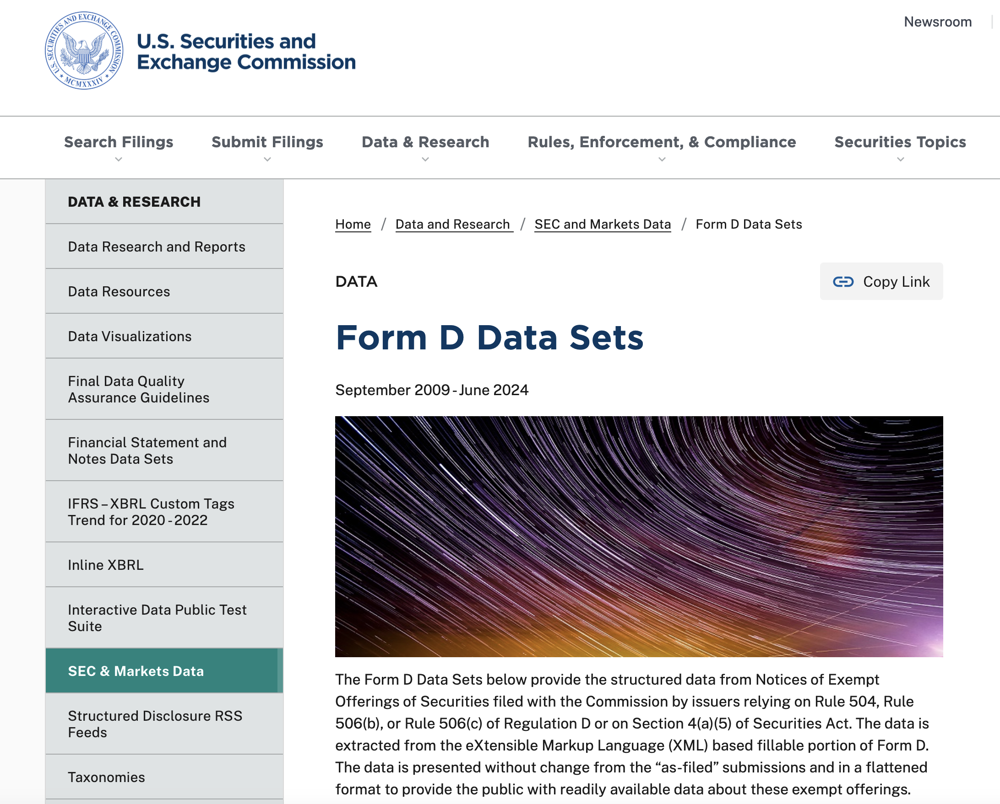
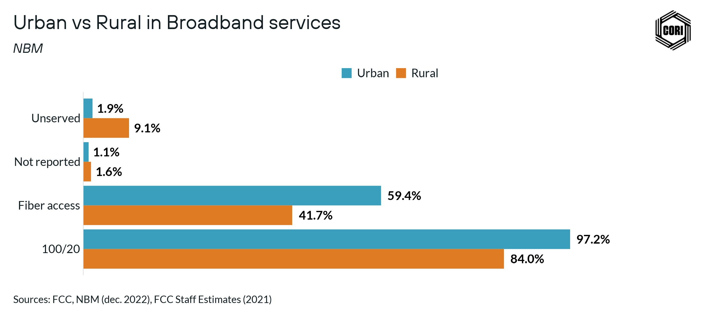
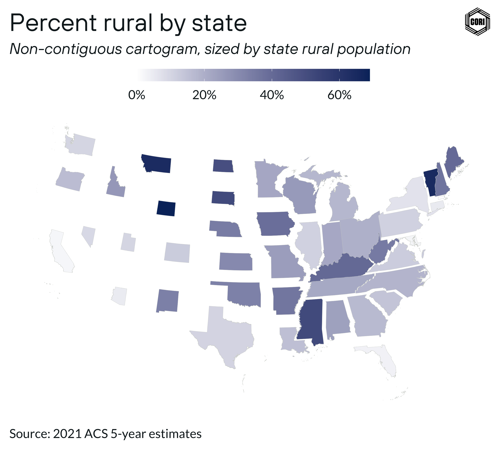
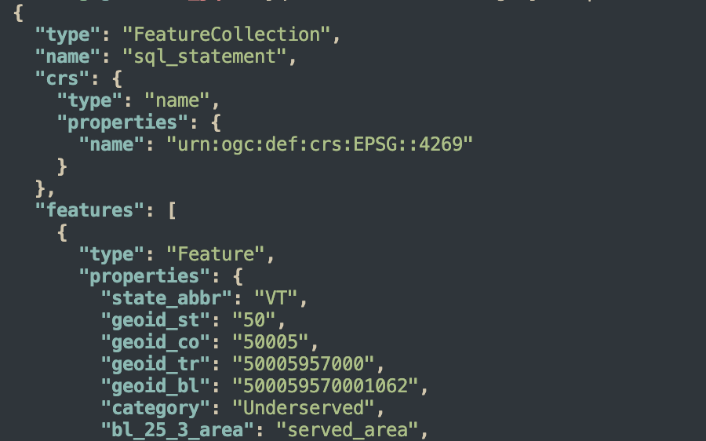

Mapping & Data Analytics Blog
@cori-risi
Mapping & Data Analytics Blog
About
Recent Posts

Estimating local impact of broadband adoption
Last year, exciting research surfaced around estimating the impact of broadband services on economic activity. In particular, results from the Beyond Connectivity Report sugg…
Apr 30, 2025
Lindsey Elliott & Drew Rosebush

The reclassification of rural counties and what it means for rural America
Why is rural America perceived as being perpetually in decline? In part, because superstar rural counties often grow into run-of-the-mill urban counties.
Apr 28, 2025
Camden Blatchly

How we work with Form D filings
We access raw Form D filings using the
dform
package. There are two datasets: issuers and offerings. The issuers dataset describes entities which are filing an offering…
Apr 18, 2025
Camden Blatchly

Recapping our favorite visualizations of 2024
From downtown placemaking to broadband planning and economic research, data-driven analysis has remained at the heart of CORI’s work this past year. To highlight the hard…
Mar 19, 2025
Camden Blatchly
Democratizing analytics on FCC’s (big) data
Accessing data about access to broadband
The FCC’s public release of the National Broadband Map should, in theory, allow broadband providers to maximize their access to the unprecedented availability of public and…
Feb 12, 2025
John Hall, Olivier Leroy

3 cool uses of the cori.data.fcc package
A quick primer on accessing, analyzing, and mapping FCC data using the cori.data.fcc package
Nov 11, 2024
Camden Blatchly
From elephant to duck!
There are a lot of conversations — understandably — on the use of Apache Parquet, Apache Arrow and DuckDB.
Jul 14, 2024
Olivier Leroy, John Hall

The top 10 micropolitan areas for raising venture capital
Venture capital funding plays a pivotal role in bolstering a region’s economy by catalyzing innovation, fostering job creation, and attracting talent.
Jul 3, 2024
Brittany Kainen

Using SEC Form D to estimate venture capital
The ability of private companies to raise capital serves as a crucial indicator of entrepreneurial activity. The Security and Exchange Commission’s Form D is a publicly…
Jul 1, 2024
Brittany Kainen

MDA’s URISA-2023 presentation
The Urban and Regional Information Systems Association — better known as URISA — is the main association for professionals in the GIS and geospatial space.
Jun 20, 2024
Olivier Leroy, Drew Rosebush

Six tips for mapping rural data
Mapping rural data is hard! Between sparse populations, inaccurate data, and the challenge of defining what even counts as rural, creating accurate and meaningful maps can…
May 24, 2024
Camden Blatchly

Awesome jq and GeoJSON
If you are manipulating a lot of
GeoJSON
features/objects and want a quick CLI tool to filter and slice them, you should give jq a try! Since there are not many tutorials…
Mar 10, 2024
Olivier Leroy
No matching items